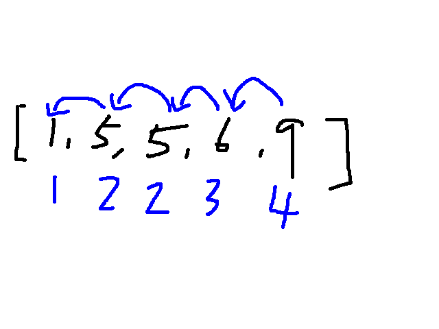
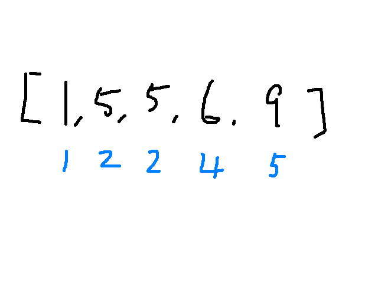

前言
單純記錄工作上遇到排名的問題，用什麼邏輯去處理，但也不屬於哪個演算法裡面的雛形～
前提是，這邊的數量基本已經由小到大了，需要再判斷的是有沒有兩個數字相同的，給予同樣名次。
正文
當時一直想用由前往後推array的方式來比對，
最終使用由後一個往前比對，減少了執行上的困擾。

兩種情況
排名重複，最終只取10名 (永遠只顯示10筆資料)
1
2
3
4
5
6
7
8
9
10
11
12
13
14
15
16
17
18
19
20
21
22
23function returnData(data_list,rank_limit){
let rank = 1
const top_rank = []
data_list.some((v,index,arr)=>{
if(index !== 0){
if(arr[index-1].count === v.count) { // 如果前一個數字跟現在的一樣大
v.rank_id = arr[index-1].rank_id // 現在的排名跟上一個一樣
} else {
v.rank_id = rank // 不一樣的話，就由rank填值
rank++
}
} else { // index 等於0不能往前比對
v.rank_id = rank // 直接給值
rank++
}
top_rank.push(v);
if(index === rank_limit -1) return true // some用法return true跳出迴圈
})
return top_rank;
};
// 呼叫：
const top10 = returnData(data_list, 10)排名重複，最終取到排名數字到10 (所以可能超過10筆)
（跟上面基本差不多，最後的返回條件不同）1
2
3
4
5
6
7
8
9
10
11
12
13
14
15
16
17
18
19
20function returnData(data_list, rank_limit){
let rank = 1
const top_rank = []
data_list.some((v,index,arr)=>{
if(index !== 0) {
if(arr[index-1].count === v.count) {
v.rank_id = arr[index-1].rank_id
} else {
v.rank_id = rank
rank++
}
} else {
v.rank_id = rank
rank++
}
top_rank.push(v)
if(rank === rank_limit) return true //直到排到名次的數字10才停
})
return top_rank
};做會跳過的排名

如果想要做會跳過的排名（如圖），想想其實也是差不多的做法，就讓rank保持向上累加就可以做到這個效果，
然後再看要總數10個還是排名的數字到10。
心得：
以上小小記錄怎麼思考跟當時解決問題的方式，說不定以後會再派上用場，希望到時思考可以多一個參考點。